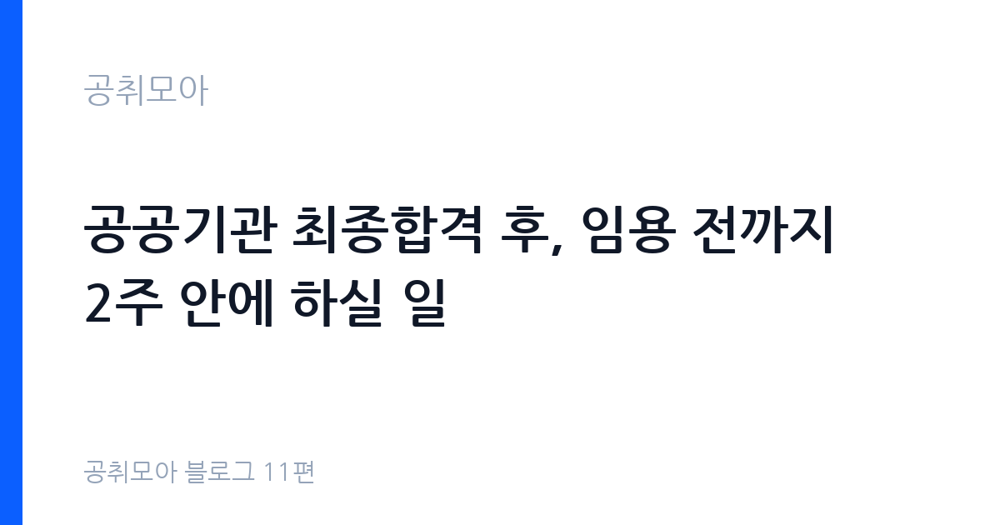

공공기관 최종합격 후, 임용 전까지 2주 안에 하실 일
2026-10-24 · 공취모아 블로그 11편

통보 당일: 안내문의 기한 4가지를 달력에 적으세요
최종합격자 발표와 함께 기관은 임용 안내문을 게시합니다. 안내문에는 임용 후보 등록 기간, 신원조회 서류 제출 기한, 채용신체검사서 제출 기한, 임용 예정일이 적혀 있습니다. 등록 기간은 공고마다 다르지만 통보 후 1~2주 안으로 정해지는 경우가 많으니, 당일에 4개 날짜를 달력에 적어 두세요. 임용 후보 등록을 기한 안에 하지 않으면 합격을 포기한 것으로 보는 공고가 대부분입니다.
제출 방식도 확인하세요. 방문 제출·등기우편·온라인 등록 중 하나이며, 등기우편은 마감일 소인까지 인정하는지, 방문은 평일 몇 시까지 접수하는지가 안내문에 적혀 있습니다. 타 지역에 계시면 등기 소요일을 감안해 이틀 일찍 부치세요. 서류 봉투에는 수험번호·성명·연락처를 적어 두시면 분실 시 찾을 수 있습니다.
임용 예정일은 출근 시작일입니다. 현 직장에 다니고 계시면 퇴사 통보 시점을 임용 예정일에 맞춰야 합니다. 인수인계 기간을 감안해 합격 통보 직후 상사께 말씀드리는 것이 좋습니다. 임용 예정일 변경은 기관 사정에 따라 협의가 가능한 경우도 있으니, 부득이한 사정이 있으면 임용 담당자에게 미리 문의하세요.
임용 후보 등록: 합격 확정의 첫 단추입니다
임용 후보 등록은 "임용되겠다"는 의사를 기관에 알리는 절차입니다. 등록 서류는 보통 임용 후보 등록원서, 서약서, 개인정보 수집·이용 동의서, 신원진술서, 최종학력 증명서, 경력증명서, 자격증 사본, 주민등록등본 등으로 구성됩니다. 안내문에 적힌 목록을 한 줄씩 체크하면서 준비하세요. 서류는 발급일 기준 3개월 이내 것만 인정하는 공고가 많으니, 미리 떼어 둔 서류의 발급일을 확인하세요.
사진도 준비하세요. 반명함판 사진 2~3매를 요구하는 기관이 많고, 공무원증·사원증 발급용이라 배경·복장 규정이 있는 경우도 있습니다. 사진관에 가실 때 안내문의 사진 규격을 보여주고 찍으세요. 온라인 등록 방식이면 사진 파일을 스캔 규격에 맞춰 올리시면 됩니다.
등록원서의 경력·학력란은 추후 호봉 획정의 근거가 됩니다. 경력증명서와 한 글자도 다르지 않게 적으세요. 재직 기간·직위·담당 업무가 증명서와 다르면 사실 확인 과정에서 보완 요청이 옵니다. 아르바이트·단기 계약 경력은 호봉 인정이 안 되는 경우가 많으니, 인정 기준은 안내문이나 담당자에게 확인하시기 바랍니다.
신원조회·결격사유: 해당 조항을 미리 확인하세요
공공기관 임용에는 신원조사가 따릅니다. 신원진술서를 제출하면 기관이 경찰청 등에 조회를 의뢰하고, 회보가 올 때까지 임용이 보류됩니다. 조회 기간은 보통 1~2주이니, 서류를 늦게 내면 임용 예정일이 밀릴 수 있습니다. 신원진술서는 본적·거주 이력·병역·전과 기록 등을 적는 서류라 허위 기재가 있으면 그 자체가 결격 사유가 되니, 기억이 불확실한 항목은 발급 서류로 대조하고 적으세요.
결격사유는 국가공무원법 제33조와 각 기관 인사규정에 정해져 있습니다. 금고 이상의 실형을 선고받고 집행이 끝나지 않은 경우, 탄핵·파면 처분을 받은 경우, 마약류 중독자 등이 대표적입니다. 지방공무원·공공기관 직원은 해당 법령과 기관 규정을 각각 적용받습니다. 본인에게 해당될 여지가 있으면 임용 담당자에게 기한 전에 상담하세요. 조회 결과가 나오고 나서 대응하면 선택지가 없습니다.
병역 사항도 정리하세요. 병역 미필·면제·전역 구분에 따라 추가 서류(병적증명서·전역증 등)를 요구하는 기관이 있습니다. 병적증명서는 정부24와 주민센터에서 발급받을 수 있습니다. 해외 체류 이력이 길면 출입국 기록 확인을 요구받는 경우도 있으니, 여권 사본을 미리 준비해 두세요.
채용신체검사: 지정 병원에서 기한 안에 받으세요
채용신체검사는 공무원 채용신체검사 규정에 따른 검사로, 지정된 국공립병원·종합병원에서 받으셔야 합니다. 일반 건강검진 결과지로 대체되지 않는 공고가 대부분이니, 안내문에 적힌 지정 병원 목록을 확인하세요. 검사 항목은 신장·체중·시력·청력·혈압·혈액·소변·흉부 X선 등이며, 결과 발급까지 며칠이 걸리니 기한 1주일 전에는 검사를 받으시는 것이 안전합니다.
검사 비용은 본인 부담인 경우가 많습니다. 판정 기준은 직무 특성에 따라 다르고, 불합격 판정이 나오면 재검 기회를 주는 공고도 있습니다. 검사 당일에는 신분증과 사진, 안내문에 적힌 검사 의뢰서를 지참하세요. 공복 검사 항목이 있으니 전날 밤 9시 이후에는 금식하시고, 복용 중인 약이 있으면 검진의에게 미리 말씀하세요.
검사서를 받으시면 판정란을 확인하세요. "정상" 외 판정이 있으면 기관 기준에 따라 추가 검사나 소견서를 요구받을 수 있습니다. 색각·청력 기준이 있는 직무(전기·기계·방호·운전 등)는 판정 기준을 미리 확인하시고, 기준 미달이 예상되면 담당자와 상의하세요. 검사서는 원본 제출이 원칙이니 복사본을 하나 남겨 두세요.
호봉 획정: 경력증명서 한 장이 월급을 바꿉니다
초임 호봉은 입사 후 월급을 정하는 기준이라, 인정받을 수 있는 경력은 전부 증명해야 합니다. 인정 대상은 보통 동일·유사 분야의 정규직·계약직 경력이며, 국민연금·건강보험 가입 이력으로 재직 사실을 대조합니다. 경력증명서에는 재직 기간·직위·담당 업무·상근 여부가 들어가야 하고, 폐업한 회사의 경력은 4대보험 가입 내역서로 갈음하는 경우도 있습니다.
호봉 획정 신청은 임용 직후 정해진 기간 안에 해야 합니다. 신청 기한을 넘기면 소급이 안 되는 기관이 많으니, 임용 첫 주에 인사 담당자에게 신청 절차를 물어보세요. 제출 서류는 경력증명서 원본, 4대보험 가입 내역, 병역 경력 인정 서류 등입니다. 군 복무 경력은 호봉에 가산되는 경우가 많으니 병적증명서를 함께 내세요.
자격증·학위 가산도 확인하세요. 직무 관련 국가기술자격이나 석사 이상 학위에 수당을 붙이는 기관이 있습니다. 채용 공고의 우대사항에 적힌 자격이 실제 처우에 어떻게 반영되는지는 임용 안내문이나 보수 규정에 나와 있으니, 해당되면 증빙을 함께 제출하세요. 첫 월급명세서가 나오면 호봉·수당이 신청대로 반영됐는지 대조하시기 바랍니다.
임용 전 체크리스트
| 순서 | 할 일 | 기한 기준 |
|---|---|---|
| 1 | 안내문 기한 4가지 달력 기록 | 통보 당일 |
| 2 | 임용 후보 등록 서류 제출 | 등록 기간 안 |
| 3 | 신원진술서 등 신원조회 서류 제출 | 안내문 기한 안 |
| 4 | 지정 병원 채용신체검사 수검·제출 | 검사서 기한 1주 전 수검 |
| 5 | 경력증명서·병적증명서 등 호봉 증빙 준비 | 임용 직후 신청 기한 안 |
| 6 | 현 직장 퇴사 통보·인수인계 | 임용 예정일 역산 |
자주 묻는 질문
기한을 넘기면 합격을 포기한 것으로 처리하는 공고가 대부분입니다. 부득이한 사정(입원·천재지변 등)이 있으면 기한 전에 담당자에게 연락해 협의하세요. 사후 설명은 받아들여지지 않는 경우가 많습니다.
결격사유에 해당하면 임용이 취소됩니다. 다만 조회 기간이 길어지는 것과 탈락은 다르니, 결과 통보를 기다리시는 동안 임용 예정일 변경 가능 여부를 담당자에게 확인해 두세요. 허위 기재는 그 자체가 취소 사유이니 정확히 적으세요.
재검 기회를 주는 공고가 많습니다. 판정 기준은 직무마다 다르니, 불합격 판정이 나오면 기준표와 본인 수치를 대조하고 담당자에게 재검 절차를 문의하세요. 추가 소견서로 판정이 뒤집히는 경우도 있습니다.
통보 당일의 30분이 임용을 지킵니다
최종합격 탈락 사유 1위는 실격이 아니라 기한 놓치기입니다. 등록 미제출·검사서 지연·증빙 미비가 매년 반복됩니다. 통보 당일 기한 4가지 기록, 등록 서류 일괄 제출, 검사 1주 전 수검, 호봉 증빙 준비만 지키셔도 임용까지 매끄럽게 가실 수 있습니다. 다음 도전을 준비 중이시면 공취모아에서 마감 임박 공고를 확인하시고, 이 글을 저장해 두셨다가 합격 통보 당일에 다시 읽어보시기 바랍니다.
함께 읽으면 좋은 글
이 글은 공취모아가 공개 자료를 정리한 정보 제공용 글입니다. 합격을 보장하지 않으며, 등록 기한·제출 서류·검사 지정 병원·호봉 인정 기준은 기관·공고마다 다르니 원문 공고문과 임용 안내문을 기준으로 확인하시기 바랍니다. (2026-10-24 기준)